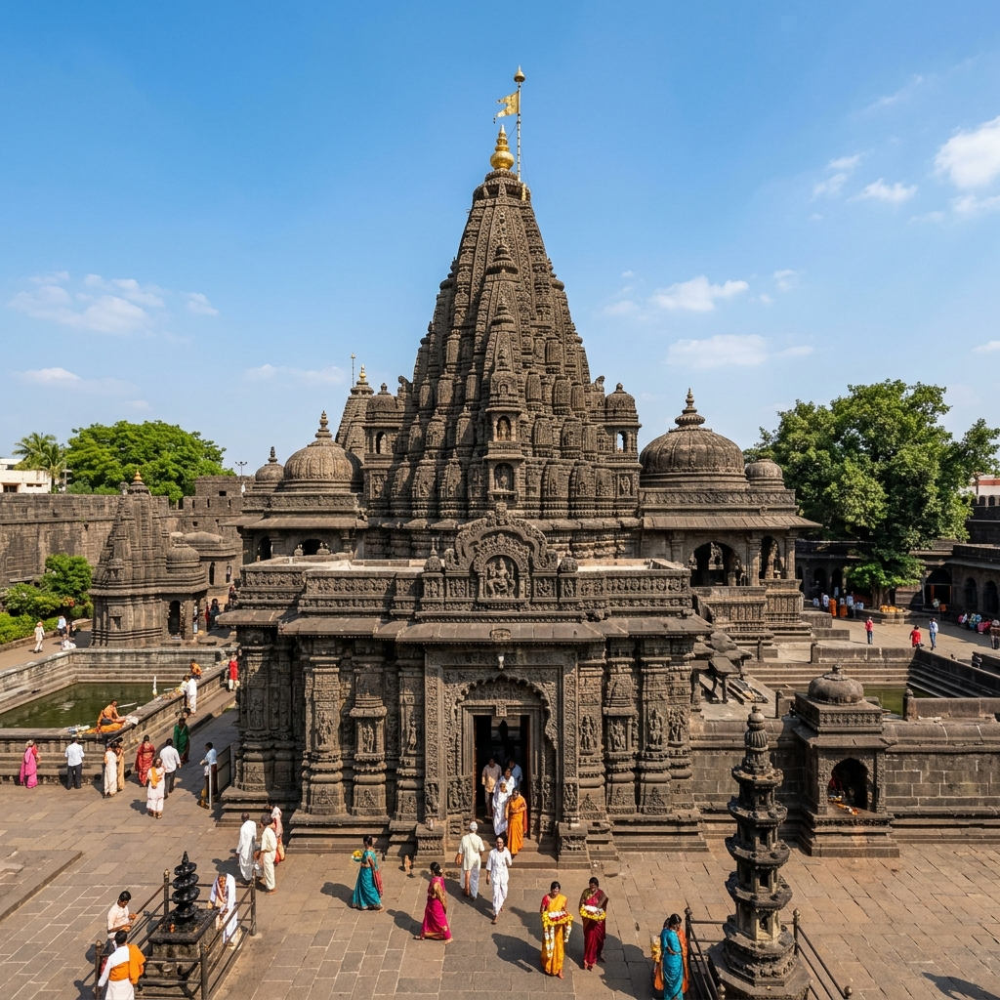

About Temple
Visiting Mumbadevi Temple feels like connecting to the original spirit of Mumbai. Located in the crowded lanes of South Mumbai, this temple carries a sense of tradition that stands strong even today. Despite the busy surroundings, once you step inside, there is a feeling of calm and devotion. It’s a place where locals come regularly with simple faith, making the experience feel real and grounded rather than grand or commercial.
Original Spirit
Grounded & Real
South Mumbai
Traditional Devotion

History & Significance

Mumbadevi Temple is dedicated to Goddess Mumba, who is believed to be the guardian deity of the city. In fact, the name "Mumbai" itself is derived from Mumbadevi. The temple has been an important spiritual center for centuries and holds deep historical importance for the city’s identity. Fishermen and local communities especially consider the goddess as their protector and guide.
Goddess Mumba
Guardian of the City
Name Origin
Historic Identity
What Makes It Unique
Discover the unique factors that set Mumbadevi Temple apart from other shrines.


Travel Guide
Convenient ways to reach the temple in South Mumbai.
Option 1: Railways & Walking
The nearest railway stations are Charni Road and Marine Lines on the Western Line. From there, you can take a short taxi ride or walk through the crowded Kalbadevi market roads.
Stations: Marine Lines / Charni RoadOption 2: City Cabs & Buses
Local black-and-yellow cabs and BEST buses connect to South Mumbai. Due to Bhuleshwar market congestion, walking the final 10-15 minutes is recommended.
Bhuleshwar Market AccessOption 3: Upcoming Metro Connectivity
Metro lines connecting to South Mumbai will offer transit closer to Kalbadevi and Crawford Market areas, within walking distance from the shrine.
Essential Information
Important details regarding timings, queues, and ideal visiting slots.
Timings & Crowds
Opens at 6:00 AM and closes at 9:00 PM. Early mornings are best to beat the heavy bazaar traffic and experience a peaceful darshan.
Entry & Offerings
General entry for darshan is free. Devotees can purchase floral offerings or participate in poojas directly via temple trust counters.
Best Time to Visit
Accessible throughout the year. Weekdays are highly recommended to avoid heavy weekend shoppers. Navratri brings grand celebrations.
Location & Coordinates
Bhuleshwar area, South Mumbai, Maharashtra, India